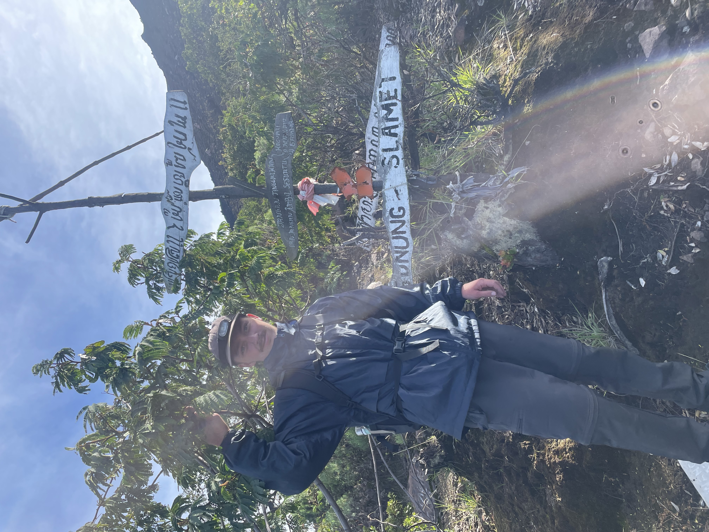
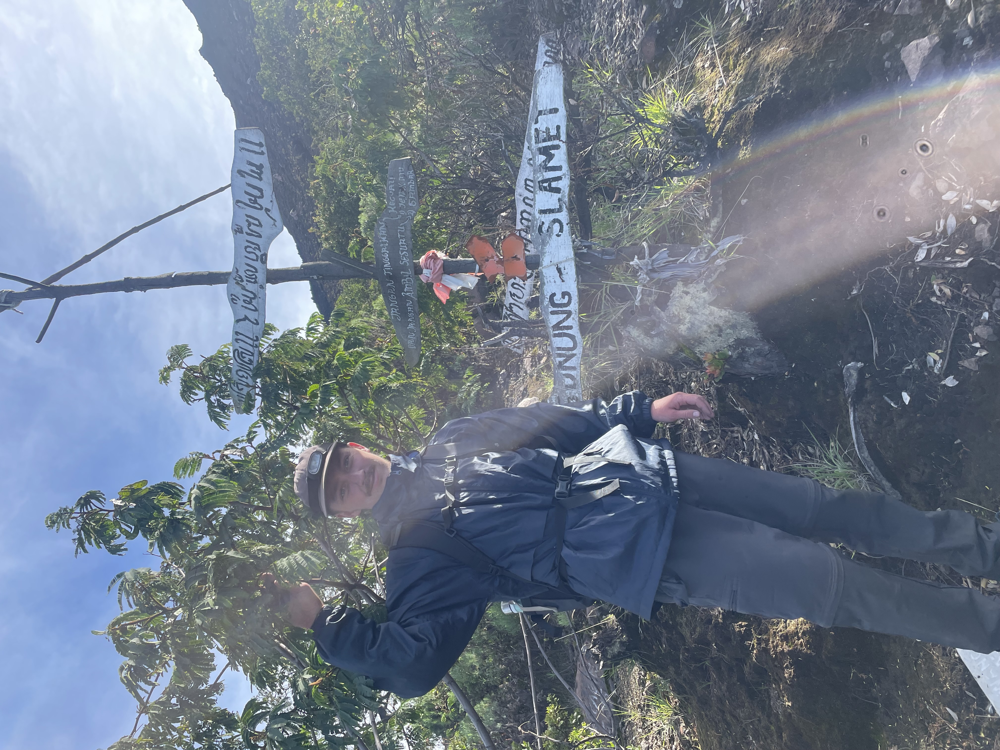

My Journey
I am a Data Scientist and AI researcher dedicated to leveraging machine learning to solve environmental challenges. Born in Thailand and raised across Germany, Turkey, Qatar, and Spain, I developed an early appreciation for the natural world and a firsthand understanding of how environmental changes disproportionately impact different regions.My academic journey began at the University of Warwick with a BSc in MORSE (Mathematics, Operational Research, Statistics, and Economics) which focused heavily on pure mathematical and statistical theory. This led me to roles as an Actuarial Graduate and to sport statistics. While these experiences sharpened my analytical toolkit, I realised I wanted to apply these skills to problems that resonated more deeply with my personal values.
Consequently, I pivoted to an MSc in AI for Sustainable Development at UCL, moving from traditional statistics to advanced Deep Learning. Through my masters and my time at Remote Sensing Solutions in Munich, I have worked on geospatial projects ranging from using computer vision to extract insights from satellite imagery and analysing acoustic patterns for biodiversity monitoring to leveraging LLMs for natural language processing tasks. While my research interests primarily focus lie in disaster response and water sustainability - from coral reef protection to coastal monitoring to aquifer quantification - I am driven by curiosity and eager to tackle challenges across the AI4EO landscape.
Outside of work, I am a keen sportsman and happiest when exploring the outdoors, whether hiking, cycling, or diving. Before starting my Master's, I spent six months backpacking across Pakistan, India, China, and Borneo, an experience that further cemented my commitment to protecting the natural world.
 
